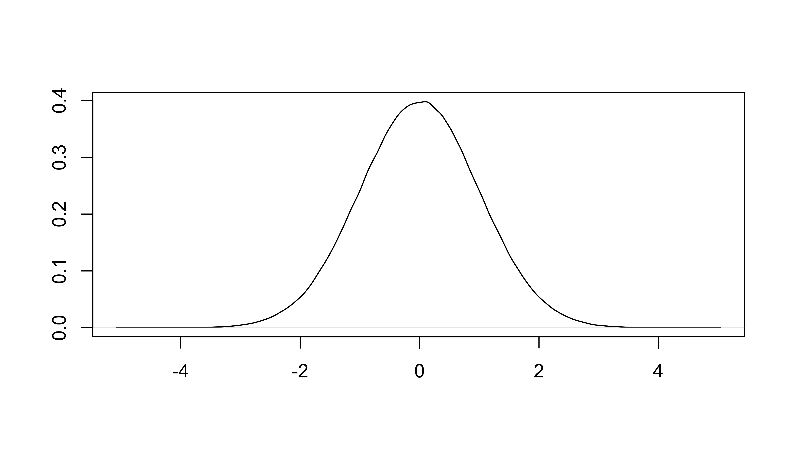
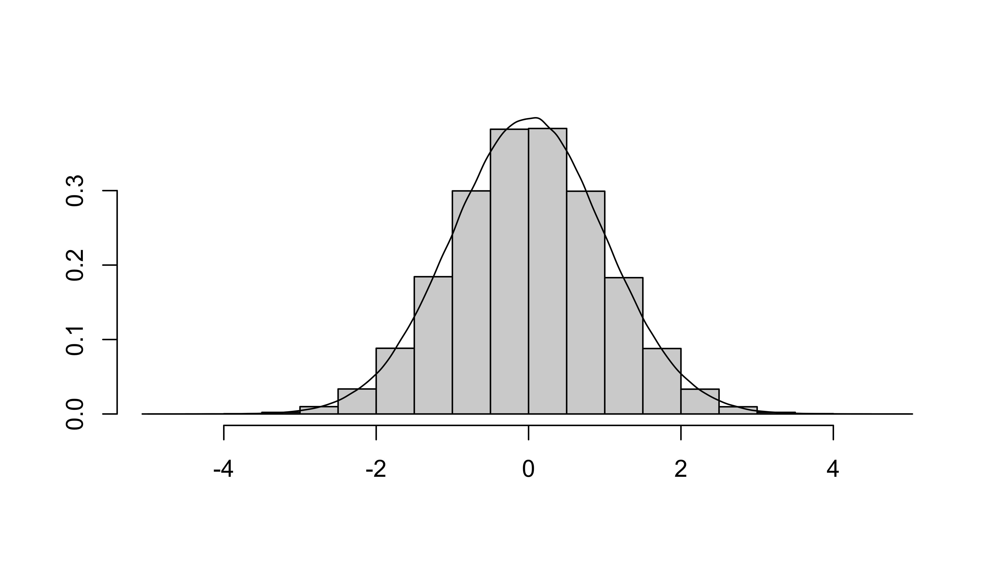
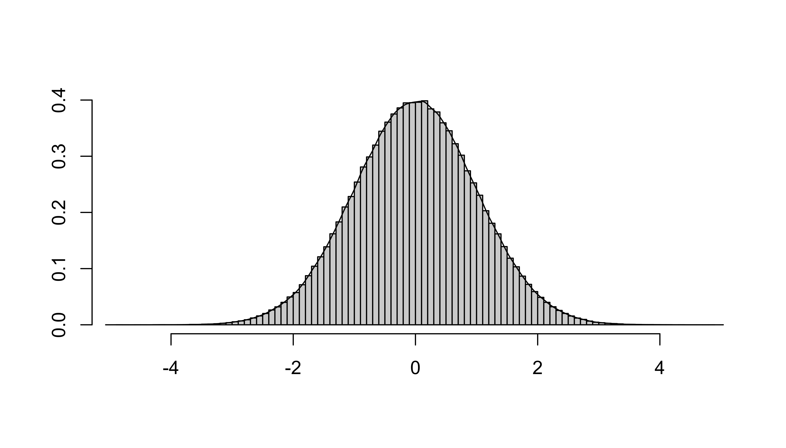
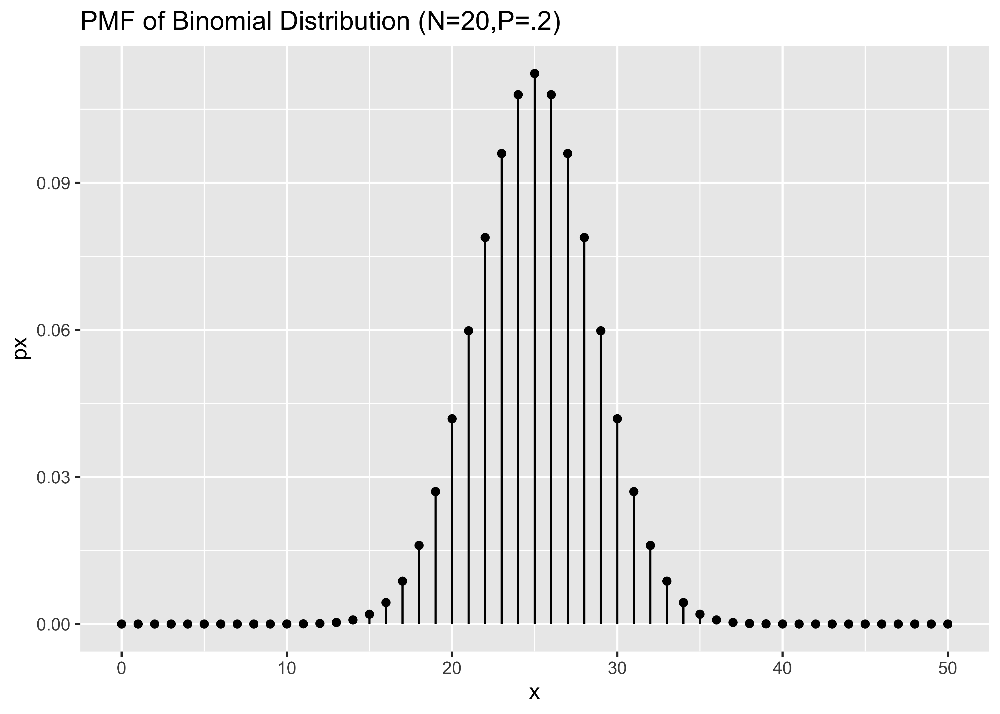
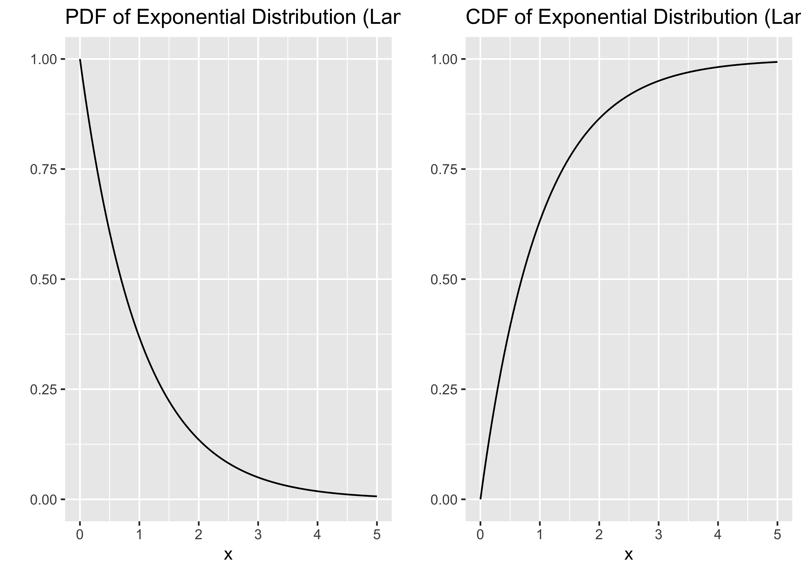
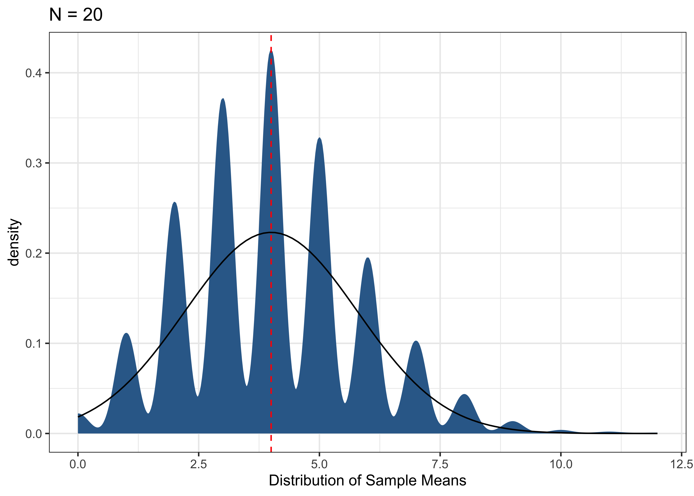
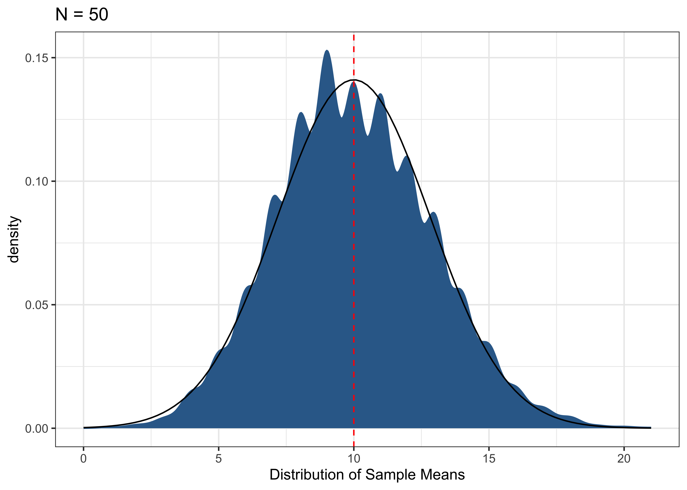
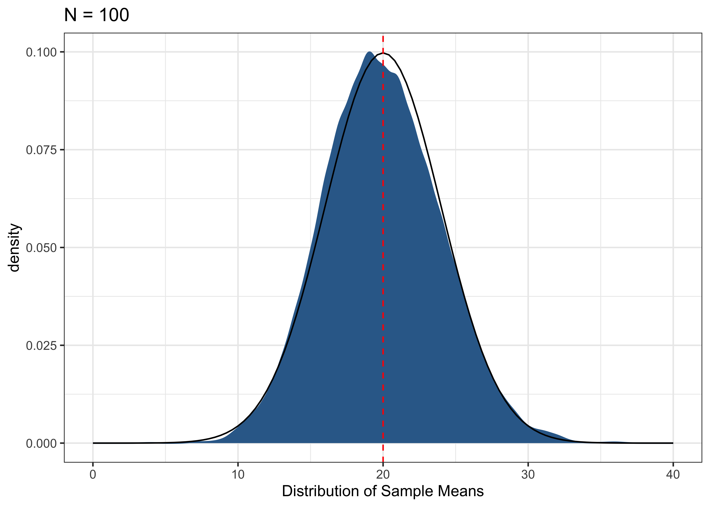
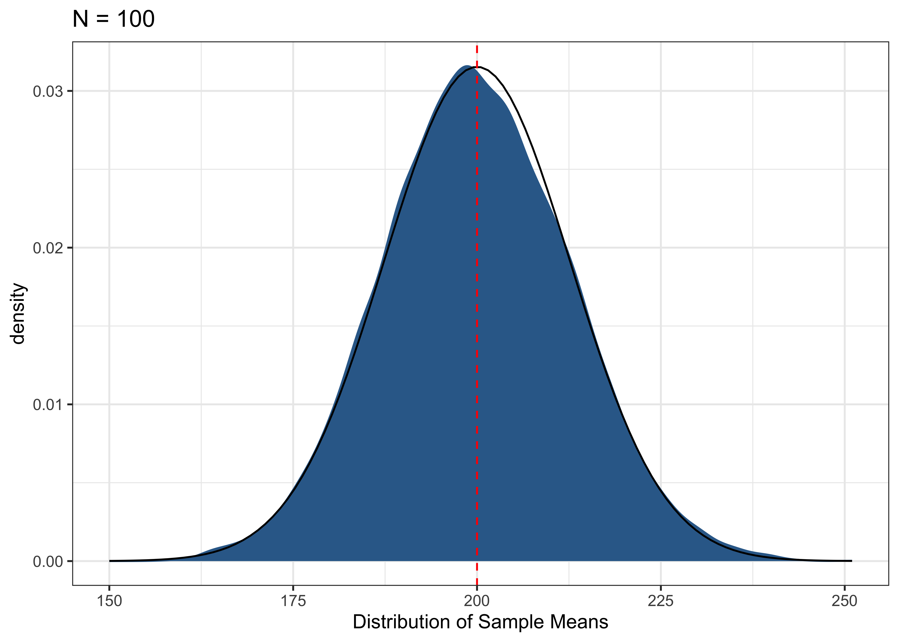

Discrete variables have probability mass functions (PMF)
Continuous variables have probability density functions (PDF)
Cumulative Density Functions
Discrete: Summation of discrete probabilities
Continuous: Integration over a range of values
Discrete distributions
Probability Mass Function (pmf):\(f(x)=p(X=x)\)
Assigns probabilities to each unique event such that Kolmogorov Axioms (Positivity, Certainty, and Additivity) still apply
Cumulative Distribution Function (cdf)\(F(x_j)=p(X\leq x)=\sum_{i=1}^{j}p(x_i)\)
Sum of the probability mass for events less than or equal to \(x_j\)
Example: Toss Two coins
\(S={TT,TH,HT,HH}\)
Let \(X\) be the number of heads
\(X(TT)=0\)
\(X(TH)=1\)
\(X(HT)=1\)
\(X(HH)=2\)
\(f(X=0)=p(X=0)=1/4\)
\(f(X=1)=p(X=1)=1/2\)
\(F(X\leq 1) = p(X \leq 1)= 3/4\)
Each side has equal probability of occurring (1/6). The probability that you roll a 2 or less P(X<=2) = 1/6 + 1/6 = 1/3
Continuous distributions
Probability Density Functions (PDF):\(f(x)\)
Assigns probabilities to events in the sample space such that Kolmogorov Axioms still apply
But… since their are an infinite number of values a continuous variable could take, p(X=x)=0, that is, the probability that X takes any one specific value is 0.
Cumulative Distribution Function (CDF)\(F(x)=p(X\leq x)=\int_{-\infty}^{x}f(x)dx\)
Instead of summing up to a specific value (discrete) we integrate over all possible values up to \(x\)
Probability of having a value less than x
🦉 Integrals
First, a brief aside on integral calculus:
What’s the area of the rectangle? \(base\times height\)
🦉 Integrals
How would we find the area under a curve?

🦉 Integrals
Well suppose we added up the areas of a bunch of rectangles roughly whose height’s approximated the height of the curve?

Can we do any better?
🦉 Integrals
Let’s make the rectangles smaller

What happens as the width of rectangles get even smaller, approaches 0? Our approximation get’s even better:
Note that in our coin flip example \(p=0.5\) but it need not. Just imagine a weighted coin like the Patriots use at Foxborough
Uniform Distribution
Our fair die examples represent a discrete uniform distribution: multiple outcomes, equally likely. We could even imagine an infinite number of possible outcomes within a range \([a,b]\), the key parameters for a uniform distribution, in which case our case our continuous uniform random variable has a pdf of
\[f(x) =
\left\{
\begin{array}{cc}
\frac{1}{b-a}& \mathrm{if\ } a \leq x\leq b \\
0 & \text{otherwise} \\
\end{array}
\right.\]
And a CDF:
\[F(x) =
\left\{
\begin{array}{cc}
0 & x <a \\
\frac{x-a}{b-a}& \mathrm{if\ } a \leq x < b \\
1 & x \geq b \\
\end{array}
\right.\]
We won’t run into uniform distributions all that often except in examples like rolling a fair sided die, but often they’re used in Bayesian analysis as a form of uninformative prior.
Binomial Distributions
The binomial distribution may be thought of as the sum of outcomes of things that follow a Bernoulli distribution. Toss a fair coin 20 times; how many times does it come up heads? This count is an outcome that follows the binomial distribution.
The key parameters are the number of trials \(n\) and the probability of success for each trial \(p\) and the pdf of a binomial distribution is:
\[f(x)=\binom{n}{x}p^x (1-p) ^{1-x} \ \text{for x 0,1,2},\dots n\] So if we were to toss a fair coin 20 times and count up the number of heads, the most common outcome would be 10 heads

The binomial distribution will come in handy when trying to model binary outcomes.
Poisson Distributions
What would happen if you let the \(n\) in a binomial distribution go to infinity and \(p\) go to 0 so that \(np\) stayed the same. A Poisson distribution is what would happen. We use Poisson and negative binomial distributions to describe counts using the parameter \(\lambda\) which represents rate at which events occur.
What if we wanted to know the number times a coin came up tails before heads occurred? This discrete random variable follows a geometric distribution:
\[f(x)=p(1-p) ^{x}\]
Geometric and related distributions are useful for describing the time until an event occurs
Exponential Distributions
Taking a geometric distribution to its limit, you arrive at the continuous exponential distribution, again described by a \(\lambda = \frac{1}{\beta}\) rate parameter
\[f(x)=\frac{1}{\beta}\exp\left[-x/\beta\right]\]
Cioffa-Revilla (1984) uses an exponential distribution to model the stability of Italian governments.

Normal Distribution
Finally, there’s the distribution so ubiquitous we called it normal. The Normal distribution is defined by two parameters: a location parameter \(\mu\) that determines the center of a distribution and a scale parameter \(\sigma^2\) that determines the spread of a distribution
As we’ll see normal distributions tend to arise when ever you’re summing variables.
That is sum together a bunch of values from almost any distribution and the distribution of their sums tends to follow a normal distribution.
Since lots of our statistics involve summation, lots of our statistics will tend to follow normal distributions in their limit (in finite samples like the world we live in they may follow related distributions like the t-distribution, but more on that later.)
Consider a binomial distribution with N=100 and p=.5.
The pmf of this variable (black lollipops) follows a distribution that’s closely approximated by a normal distribution (red line) with a mean 50 and a standard deviation of 5.
A relationship explained more generally by the Central Limit Theorem, which we’ll cover next week.
What’s the \(p(X \leq 0)\) for a normal distirbution with mean 0 and sd 1
Since the normal distribution is so common, it’s useful to get practice working with it’s pdf and cdf.
Consider the following question: If X is normally distributed variable with \(\mu=0\) and \(\sigma=1\), what’s the probability that X is less than 0 \(p(X\leq0)=?\) We could solve:
We’ll use the fact that close 95 of the observations of a standard normal variable will be within 2 standard deviations of the the mean of 0 for assessing whether a given statistic is likely to have arisen if the true value of that statistic were 0.
Expected Value
A (probability) weighted average of the possible outcomes of a random variable, often labeled \(\mu\)
Discrete:
\[\mu_X=E(X)=\sum xp(x)\]
Continuous
\[\mu_X=E(X)=\int_{-\infty}^{\infty}xf(x) dx\]
What’s the expected value of a 1 roll of fair die?
“The variance of X is equal to the expected value of X-squared, minus the square of X’s expected value.”
\(\sigma^2=E[X^2]-E[X]^2\) is a useful identity in proofs and derivations
Variance and Standard Deviations
We often think of variances \(Var[X]\) as describing the spread of a distribution
\[\sigma^2=Var[X]=E[(X-E[X])^2]=E(X^2)-E(X)^2\]
A standard deviation is just the square root of the variance
\[\sigma=\sqrt{Var[X]}\]
Covariance
Covariance measures the degree to which two random variables vary together.
\(Cov[X,Y] \to +\) An increase in \(X\) tends to be larger than its mean when \(Y\) is larger than its mean
\[Cov[X,Y]=E[(X-E[X])(Y-E[Y])]=E[XY]-E[X]E[Y]\]
Properties of Variance and Covariance
\(Cov[X,Y]=E[XY]-E[X]E[Y]\)
\(Var[X]=E[X^2]-(E[X])^2\)
\(Var[X|Y]=E[X^2|Y]-(E[X|Y])^2\)
\(Cov[X,Y]=Cov[X,E[Y|X]]\)
\(Var[X+Y]=Var[X]+Var[Y]+2Cov[X,Y]\)
\(Var[Y]=Var[E[Y|X]]+E[Var[Y|X]]\)
Correlation
The correlation between \(X\) and \(Y\) is simply the covariance of \(X\) and \(Y\) divided by the standard deviation of each.
\[\rho=\frac{Cov[X,Y]}{\sigma_X\sigma_Y}\]
Normalize covariance to a scale that runs between [-1,1]
class:inverse, center, middle # 💡 # The Law of Large Numbers
The Law of Large Numbers (Intuitive)
Suppose we wanted to know the average height of our class.
We could pick someone at random, measure their height and get an estimate. It would be a pretty bad estimate (it would vary a lot from person to person), but it would be an unbiased estimate
How would we improve our estimate?
The Law of Large Numbers (Intuitive)
Suppose we increased our sample size from N=1 to N = 5.
Now our estimate reflects the average of 5 people’s heights as opposed to just 1. Both are are unbiased estimates of the truth, but the N=5 sample has a lower variance.
–
Now suppose we took a sample of size N = N-1. That is we measured everyone except one person. Our estimate will be quite close to the truth, varying slightly based on the height of the person left out.
–
Finally we took a sample of size N = 24 (e.g. the class size). Since our sample is the population, our estimate will be exactly equal to to the population. Each sample will give us the same “true” value. That is, it wil not vary at all.
–
The idea that as the sample size increases, the distance of a sample mean from the population mean \(\mu\) goes to 0 is called the Law of Large Numbers
The (Weak) Law of Large Numbers (Formally)
Let \(X_1, X_2, \dots\) be independent and identically distributed (i.i.d.) random variables with mean \(\mu\) and variance \(\sigma^2\).
Then for every \(\epsilon>0\), as the sample size increases (1), the distance of a sample mean from the population mean \(\mu\) (2) goes to 0 (3).
\[\overbrace{Pr(\left|\frac{X_1+\dots+X_n}{n}-\mu\right| > \epsilon)}^{\text{2. The distance of the sample mean from the truth}} \overbrace{\to 0}^{\text{3. Goes to 0}} \underbrace{\text{ as }n \to \infty}_{\text{1. As the sample size increases}}\]
In terms of the LLN, think of our sample size as the number of times we roll a die.
If we rolled the die just once and took the average of our role, we could get a 1, 2, 3, 4, 5, or 6. which would be pretty far from our expected value of 3.5
If we rolled the die two times and took an average, we could still get an value of 1 or 6 for average, but values closer to our expected value of 3.5, happen more often
# Calculate the average from 2 rowstable(rowMeans(expand.grid(1:6, 1:6)))
As we increase our sample size (roll the die more times), the LLN says the chance that our sample average is far from the truth \((p(\left|\frac{X_1+\dots+X_n}{n}-\mu\right| > \epsilon))\), gets vanishingly small.
die <-1:6roll_fn <-function(n) { rolls <-data.frame(rolls =sample(die, size = n, replace =TRUE))# summarize rolls df <- rolls %>%summarise(# number of rollsn_rolls =n(),# number of times 1 was rolledones =sum(rolls ==1),# number of times 2 was rolled, etc..twos =sum(rolls ==2),threes =sum(rolls ==3),fours =sum(rolls ==4),fives =sum(rolls ==5),sixes =sum(rolls ==6),# Average of all our rollsaverage =mean(rolls),# Absolute difference between averages and rollsabs_error =abs(3.5-average) )# Return summary df df}
Then we could use a for-loop to simulate rolling our die once and calculating the average all the way up to rolling our die a 1000 times.
# Holdersim_df <-NULL# Set seedset.seed(123)for(i in1:1000){ sim_df <-rbind(sim_df,roll_fn(i) )}
With only a few rolls, our average bounces around a lot
Your turn! Plot how the absolute value of the error changes as the number of rolls increases. Does it increase or decrease? How does the rate at which it goes up or down seem to change?
# Write your code here:
class: inverse, center, middle #🦉 ## ICYI: Proving the Weak LLN
Proving the Weak LLN
A proof of the LLN is as follows:
First define \(U\) such that its a sample mean for sample of size \(n\)
\[U=\frac{X_1+\dots +X_n}{n}\]
Proving the Weak LLN
Then show that the sample mean, \(U\) is an unbiased estimator of the population mean \(\mu\)
Then, by Chebyshev’s inequality, a theorem specifying, for a given distribution, the maximum fraction of values that can be some distance from that distribution’s mean:
class:inverse, center, middle # 💡 ## The Central Limit Theorem
So the LLN tells us that as our sample size grows, an unbiased estimator like the sample average, will get increasingly close to the to the “true” value of the population of mean.
Iif we took a bunch of samples of the same size and calculated the mean of each sample:
the distribution of those sample means (the sampling distribution) would be centered around the truth (because the estimator is unbiased).
the width of the distribution (its variance) would decrease as we increased the size of each sample (by the LLN)
The Central Limit Theorem tells us about the shape of that distribution.
Review: Z-scores and Standardization
Given a R.V. \(X\) with mean \(\mu\) and standard deviation \(\sigma\), we can define a new R.V. \(Z\) as the standardization of \(X\):
\[Z=\frac{X-\mu}{\sigma}\]
Where Z has \(\mu=0\) and \(\sigma=1\).
Notation for the CLT
Next let’s define some variables \(S\) and \(\bar{X}\) that are the sum \((S)\) and sample mean \((\bar{X})\) of \(n\) iid draws of \(X\)
Let \(X_1,X_2,\dots,X_n\) be independent and identically distributed RVs with mean \(\mu\) and standard deviation \(\sigma\).
Basically: the expected value and variance of the sum is just \(n\) times the population parameters (the true values for the distribution).
Since the mean is just the sum divided by the sample size, the expected value of the mean is equal to the population value and the variance and standard deviations of the mean are decreasing in \(n\).
Finally, we can define \(Z\) to be a function of either \(S\) or \(\bar{X}\)
The distribution of means \((\bar{X_n})\) from almost any distribution \(X\) is approximately normal (converges in distribution), but with a smaller variance than (\(\sigma^2/n\))
Proof: Several ways, but requires a little more math than is required for this course
CLT: Why it matters
Why is this result so important?
Well lots of our questions come of the form, how does a typical value of Y vary with X.
We may not know the true underlying distribution of Y, but we can often approximate the distribution of a typical value of Y \((E[Y])\) using a normal distribution.
Simulating the CLT
For almost any distribution, the distribution of means from a sample of that distribution will converge to some Normal distribution.
The expected value of Binomial Distribution \(X \sim B(n,p)\) is \(E[X] = n*p\).
If we were to flip a coin 20 times, whether the probability of heads was 0.2, then the most likely number of heads (the expected value) is 4.
If we were to flip a coin 100 times, whether the probability of heads was 0.2, then the most likely number of heads (the expected value) is 20.
Simulating 10,000 draws from Binomial Distributions of Different Sizes
# Probability of successp <- .2# Sample sizessamp_sizes <-c(20, 50, 100,1000)# Number of simulationsnsims <-10000# Holder for simulationsdf_sim <-tibble(expand_grid(samp_size = samp_sizes,sim =1:nsims,sample_mean =NA ))
Simulating 1,000 draws from Binomial Distributions of Different Sizes
Below we loop through each sample size in samp_sizes
for(i in samp_sizes){ df_sim$sample_mean[df_sim$samp_size == i] <-replicate(nsims, i*mean(rbinom(i, 1, p)))}




Finally, let’s consider a decided non normal distribution:
So we see that our sampling distributions are centered on the truth, and as the sample size increases, the width of the distribution decreases (Law of Large Numbers)
The shapes of distributions of sample means can be approximated by a Normal Distribution \(\bar{X} \sim N(\mu, \sigma^2/n)\)
class: inverse, center, middle #🦉 ## ICYI: Maximum Likelihood Estimation
Maximum Likelihood Estimation
The LLN and CLT lie behind many important proofs and theorems in statistics such as maximum likelihood estimation (MLE)
Broadly, MLE seeks to find parameters \(\theta\) for model of some data generating process (i.e. a probability distribution), that are most probable (i.e. maximize the likelihood) given some data.
🦉 Maximum Likelihood Estimation
Formally, consider \(n\) iid random variables \(X_1, X_2, \ldots X_n\). We can then write their likelihood as
where \(f(x_i; \theta)\) is the density (or mass) function of random variable \(X_i\) evaluated at \(x_i\) with parameter \(\theta\).
MLE tries to find \(\hat{\theta}_{MLE}\) that maximizes \(\mathcal{L}(\theta \mid X)\)
🦉 Properties of Maximum Likelihood Estimators
MLE Estimators are
Functionally Invariant (The “Plug in Principle”)
If \(\hat{\theta}\) is the MLE of \(\theta\) than then the MLE of some function of \(\theta\), \(f(\theta)\) is \(f(\hat\theta_{MLE})\)
If we have the MLE of the variance, the square root of this will give us the MLE of the standard deviation
Consistent (by the LLN)
\(\hat\theta_{MLE}\) collapses to a spike over \(\theta\) as \(n \to \infty\)
Asympotically Normal (by the CLT)
A \(n \to \infty\) the sampling distribution of \(\hat\theta_{MLE}\) becomes Normally distributed
Makes calculating quantities for inference easy
Asympotically Efficient
As \(n \to \infty\), \(\hat\theta_{MLE}\) tends to be the estimator with the lowest error
class: inverse, center, middle # 💡 # Generalized Linear Models
Generalized Linear Models
OLS provides a linear estimate to the conditional mean function
–
If the conditional mean function is linear and the errors are normally distributed, OLS is the MLE.
–
What if the conditional mean function is non-linear?
–
Sometimes we can transform the mean function so that it is linear, and estimate a generalized linear model (GLM) using MLE
–
Using a GLM often produces more “reasonable” estimates, and can make more efficient use of the data, although there are many cases where a linear estimate to conditional mean function works just fine (or better)
MLE and Generalized Linear Models
We can think some variable \(y\) as having a distribution \(f\) that contains both a stochastic (random) and systematic components
In the past we’ve described the process of modeling \(y\) using a linear regression:
\[y = \beta_0 + \beta_1 x + \epsilon\]
and with multiple predictors:
\[y = X\beta + \epsilon\]
MLE and Generalized Linear Models
We haven’t really talked about the distribution of \(\epsilon\), in part because OLS doesn’t require any distributional assumptions to be unbiased.
But if we assumed \(\epsilon\) are normally distributed, with mean 0 and variance \(\sigma^2\)
\[\epsilon \sim f_\mathcal{N}(0,\sigma^2)\]
Then we could write our model for \(y\) as follows:
\[\begin{aligned} y &\sim f_{\mathcal{N}}(\mu,\sigma^2)\\
\mu &= X\beta\end{aligned}\]
Where the systematic component of why is modeled by \(X\beta\) (i.e. g() is the identity function), with errors that are Normally distributed.
The \(\beta\)s that OLS estimates turn out to be the same values that would get by maximizing the likelihood of this function, given our data, \(X\), assuming normally distributed errors.
Generalized Linear Models
But what if our outcome doesn’t follow a normal distribution?
Say for example, we have a binary outcome,that we think follows a Bernoulli distribution with \(\pi\) probability of success.
We could model the systematic portion of this using the logistic function, \(g()\)
In this class, we’ll let R handle mechanics of actually fitting these models, and instead focus on interpreting their substantive differences
OLS vs Logistic Regression
One situation where we’d use MLE is the case of binary responses variable coded using \(0\) and \(1\).
In practice, these \(0\) and \(1\)s will code for two classes such as yes/no, non-voter/voter,, etc.
How should we model this relationship?
We could use OLS to produce a linear estimate of the conditional mean function \((\text{E}[Y \mid {\bf X} = {\bf x}])\), by finding \(\beta\)s that minimize the sum of squared errors
Or
We could use a logistic regression, to produce a linear estimate of the “log-odds” of the conditional mean function of our binary variable by finding \(\beta\)s that maximize the likelihood of this function.
Because we’re not directly estimating the mean, but instead a function of the mean, we need to be careful with our interpretation of \(\hat{\beta}_1 = 3.7\).
This means that, for a one unit increase in \(x\), the log odds change (in this case increase) by \(3.7\). Also, since \(\hat{\beta}_1\) is positive, as we increase \(x\) we also increase \(p({\bf x})\).